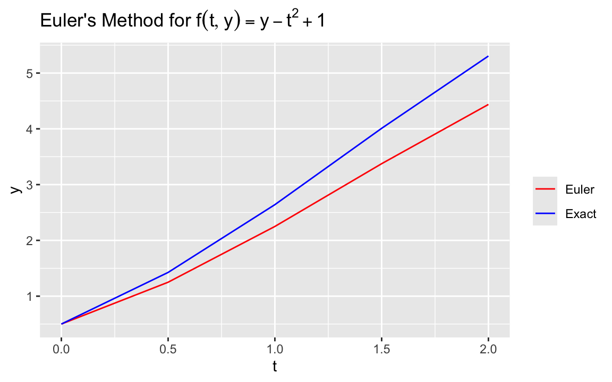

Since all of the solution techniques we will study can be generalized to a system of ODEs, we will keep it simple for now and assume we have an IVP of the form given by Equation 26.1.
Reduction of higher-order ODE to a system of ODEs
It can be shown that a general n-th order ODE:
\[
y^{(m)}(t) = f(t, y(t), y^{\prime}(t), \ldots, y^{(m-1)}(t)).
\] can be written in the form of a system of ODEs.
Example 26.1 Consider the simple second order IVP given by:
An IVP where the function \(f\) does not depend explicitly on \(t\) is said to be in autonomous form, i.e.
\[
y^\prime = f(y)
\]
Many software packages for the solution of IVPs assume that the function is given in this form. This is generally achieved through the addition of an additional equation of the form \(t^\prime = 1\).
26.2 Euler’s Method
We will now present the simplest method for solving an IVP.
Note
For the remainder of the discussion we will assume that our IVP is well-posed. See Section B.1 for details.
Recall we are looking for solutions to the IVP:
\[ \frac{dy}{dt} = f(t,y), \quad a \leq t \leq b, \quad y(a) = \alpha .\]
As in previous lectures, we will take an approach for numerically solving this problem by approximating it on a discrete grid.
In this case, the points are referred to as mesh points and are typically of the form:
\[
t_i = a + ih, \; i=0, 1, 2, \ldots, N,
\]
where the \(t_i\) are assumed to be equally spaced. Here, the distance between two consecutive points \(t_{i+1} - t_i\) is called the step size and is given by:
\[
t_{i+1} - t_i = \frac{(b-a)}{N} = h.
\]
Terminology
We will denote the step size by \(h\). Many other references denote it by \(\Delta t\) since we are usually referring to the time evolution of the IVP. Also note that the step size is sometimes called the time step, again in reference to the time variable.
In order to derive Euler’s method we can either make use of Taylor’s Theorem or just use the numerical approximation for the first derivative that we used in Section 19.1 : \[
y(t_{i+1}) = y(t_i) + h y^\prime (t_i) + \frac{h^2}{2} y^{\prime\prime} (\xi_i) \quad i = 0, 1, 2, \ldots, N-1,
\]where \(h = t_{i+1} - t_i\), and \(\xi_i \in [t_i, t_{i+1}]\).
Now remember that \(y^{\prime}\) satifies the IVP. As a result, we can rewrite the above equation as:
\[
y(t_{i+1}) = y(t_i) + h f(t_i, y(t_i)) + \frac{h^2}{2} y^{\prime\prime} (\xi_i)
\tag{26.3}\] Taking the first 2 terms on the right hand side of this equation as our approximation to \(y(t_{i+1})\) leads us to propose the following algorithm, which we will call:
This type of equation is known as a difference equation. You can think of it as being derived from a forward difference approximation to the derivative. Another interpretation is that it is the discretization (in time) of the continuous differential equation.
Example 26.2 Solve the IVP given by: \[
y^\prime = f(t,y) = y - t^2 + 1 \quad y(0) = 0.5 \quad 0 \leq t \leq 2,
\]
with \(h = 0.5\).
I find it easier before I start, to write down a table with some of the important variables, where I can keep track of the steps. Something like the following is helpful:
Euler Computations
\(i\)
\(t_i\)
\(y_i\)
0
\(t_0 = a\)
\(y_0 = y(a)\)
1
\(t_1 = a + h\)
\(y_1 = \ldots\)
2
\(t_2 = a + 2h\)
3
\(\ldots\)
\(\ldots\)
\(\ldots\)
\(N\)
\(t_N = b\)
I then fill in the initial conditions in the first row and as I compute subsequent \(y_i\) I fill in the table with those values.
Let’s first code the function, specifically \(f(t,y) = y - t^2+ 1\). Note that this IVP has an exact solution given by \((t+1)^2 - 0.5 \exp(t)\)
Code
ftyex1 <-function(t, y, pars) {# Note that we don't use pars, so it's only here as a dummy parameter required by the ODE solver yprime <- y - t^2+1return(list(c(yprime)))}# define the exact solution as wellyexact <-function(t,y) { yexact <- (t+1)^2-0.5*exp(t)return(yexact)}
Let’s now solve the IVP with a step size of \(h = 0.5\) using the built-in ODE solver with method chosen to be “euler”. We can also compute the true solution and the associated error generated by Euler’s method.
Code
# Call the ODE solver with several values for the initial conditionlibrary(deSolve)# Set time integration limits and initial conditiona <-0b <-2y0 =0.5# Set up the ode solverh <-0.5parms <-c() # Set some of the parameterstimes1 <-seq(a,b, by=h) # Create the timestep meshinit <-c(y = y0) # Set up the initial condition for the solverex1out0 <-as.data.frame(ode(init, times1, ftyex1, parms, method ="euler"))# Compute exact solution for comparisonytrue <-data.frame(ex1out0$time,yexact(times1,0))colnames(ytrue) <-c("time", "y")yerr <-data.frame(ex1out0$time, abs(ytrue$y - ex1out0$y))colnames(yerr) <-c("time", "yerr")
The table below summarizes the output from the ode solver and compares it to the exact solution. What do you notice about the error, especially as time increases?
Let’s plot the solution from Euler alongside the exact solution

Euler’s method example
Let’s explore what happens to the solutions by solving the IVP with several different initial conditions (see the plot below).
One immediate observation is that the IVP generates a family of solutions that can be parameterized by the specific initial condition chosen. In this case, also notice that the curves do not converge to a single line. What implications would this have on the solutions generated by Euler’s method? We’ll have more to say in later lectures on what is happening and what we can do to help us attain more accurate solutions.
This seems like a straightforward alternative, but now notice that the computation of \(y_{i+1}\) will depend implicitly on itself since it appears on both the right and left hand sides of this equation. This type of method is known as an implicit method and will require some sort of iterative method to be able to compute the solution at the next time step.
Explicit/Implicit Methods
(Forward) Euler’s Method is an example of a type of method called an explicit method, because everything we need to compute a quantity at time\(t_{i+1}\) is given by known quantities at the previous time step \(t_i.\) Backward Euler on the other hand is an example of an implicit method since we have \(y_{i+1}\) on both sides of the equation. There are advantages and disadvantages to both approaches. In general, one can take longer timesteps with an implicit method. On the other hand, an implicit method will generally require the solution of a nonlinear system.
26.4 Key Points
Initial Value Problems arise in many scientific and engineering problems
Euler’s method can be used to solve the IVP by using a forward difference approximation to the derivative of \(y\).
Using the backward difference approximation yields a similar method, but requires having to solve the difference equation implicitly.
Forward Euler is easy to implement and relatively cheap.